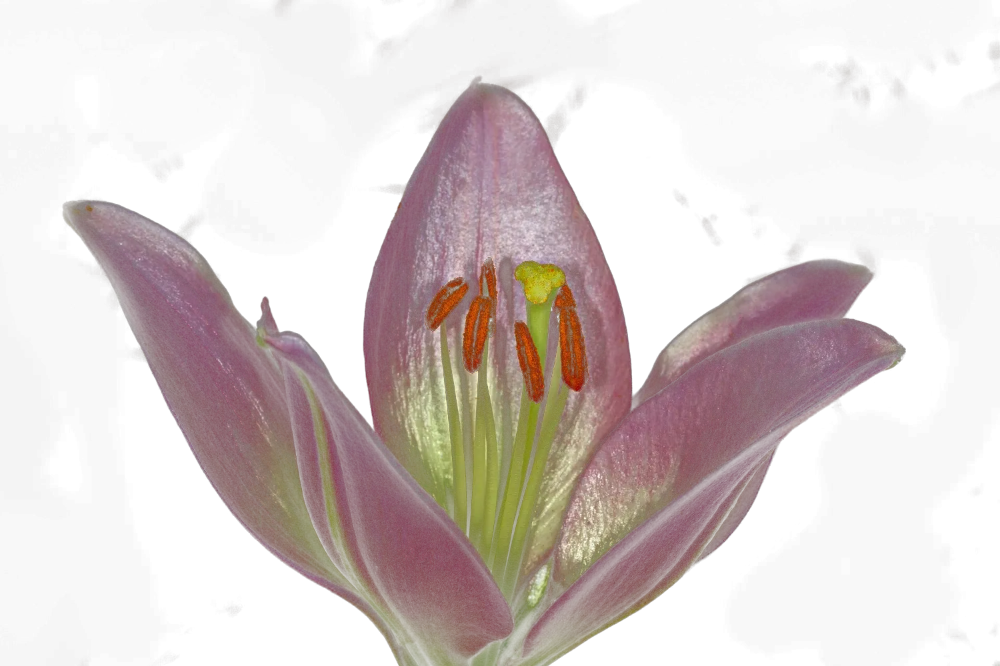
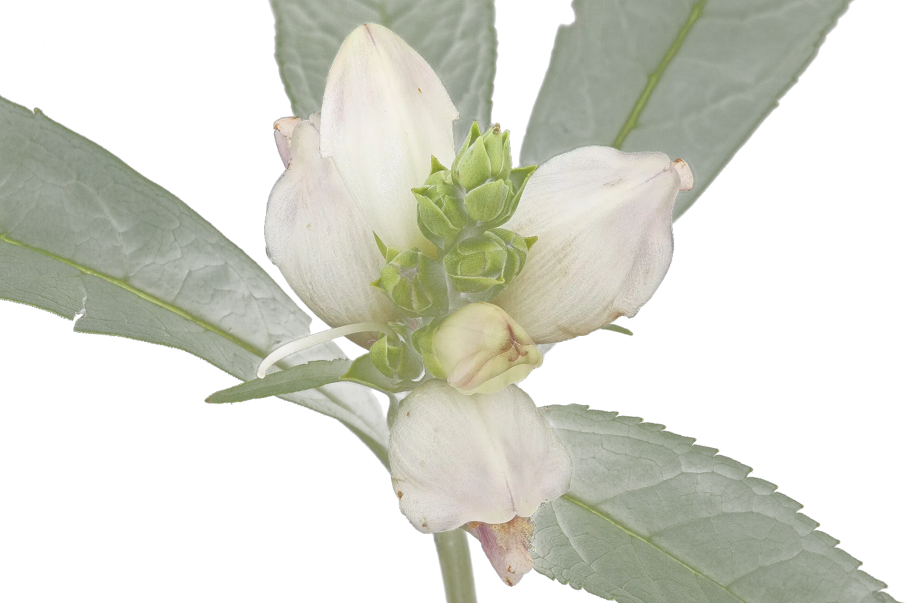
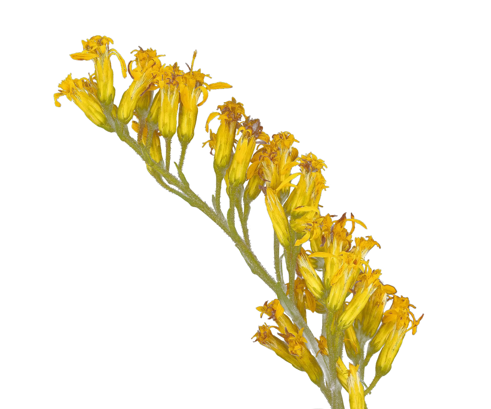
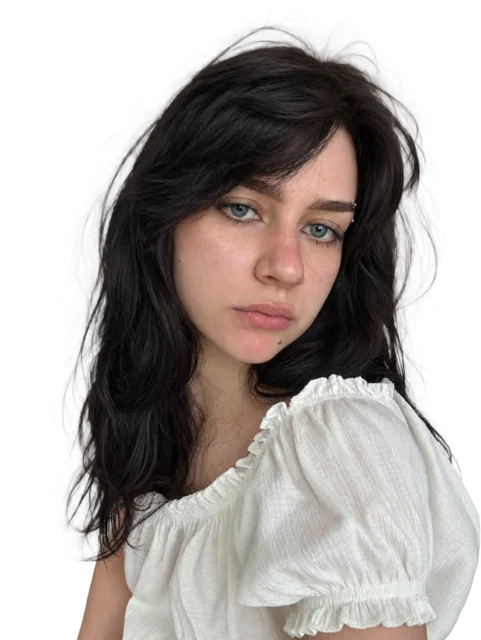
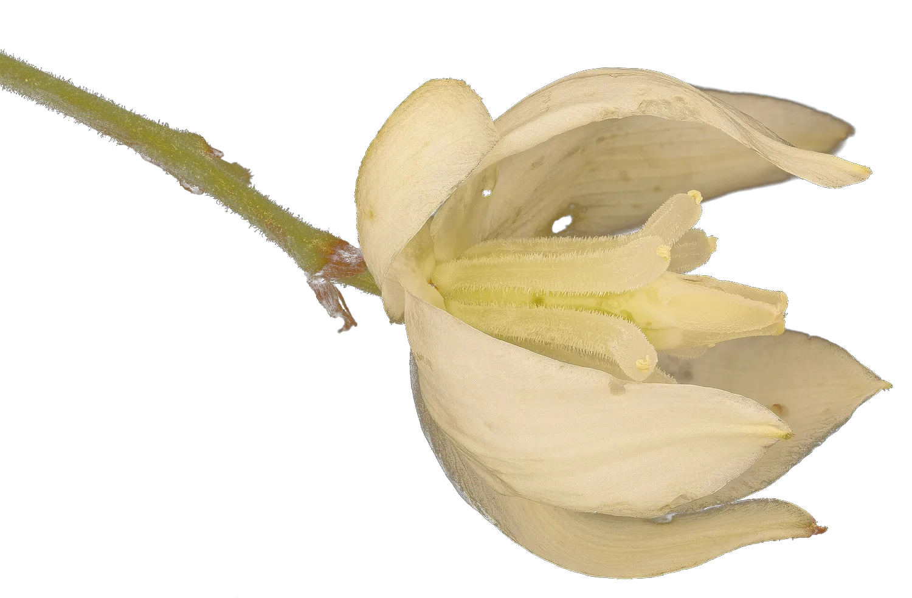
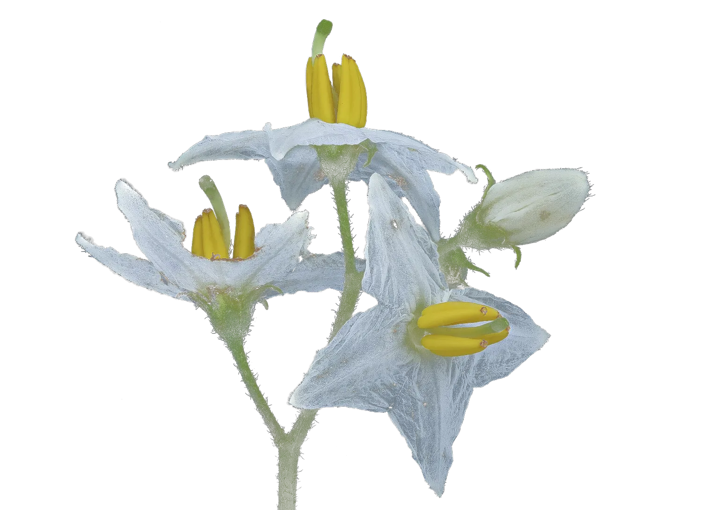
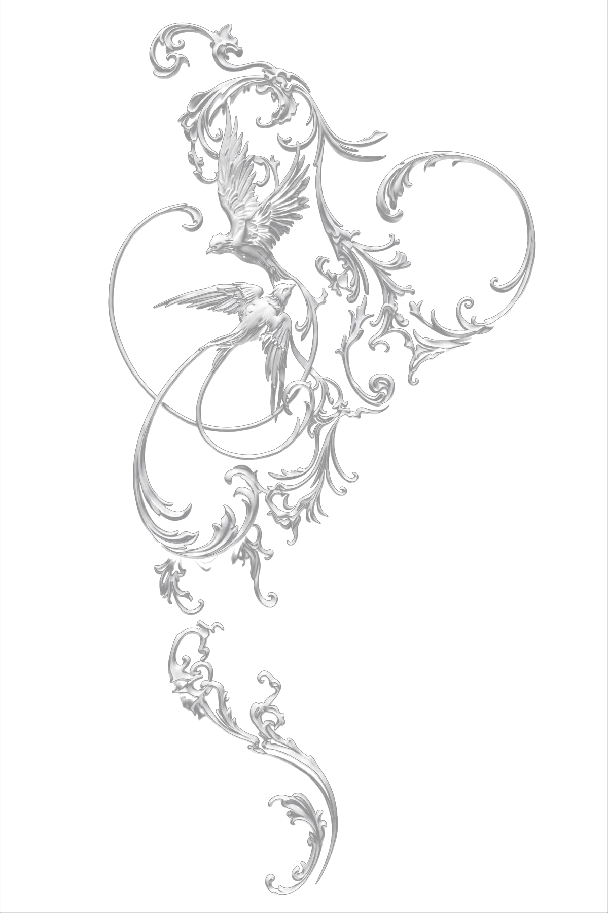

ОфицероваВасилиса
Парикмахер-колорист и визажист. Твой образ, твои правила, твоя красота.

Что я умею
Цвет, форма и лицо складываются в один образ. Поэтому всё это можно сделать у одного мастера.

Окрашивание
Ровный цвет от корней до кончиков. Подбираю оттенок под тон кожи и глаз, закрашиваю седину и отросшие корни, освежаю цвет по длине. Могу работать и с вашей краской.
Сложное окрашивание
Многоступенчатая работа с цветом: осветление прядей, мягкие переходы и тонирование. Контуринг высветляет волосы у лица и подчёркивает его форму. Делаю так, чтобы цвет красиво отрастал без резкой границы.
Стрижки
Женские и мужские на любую длину. Форму подбираю под овал лица, густоту и то, как вы укладываете волосы каждый день: стрижка должна ложиться сама.
Укладка
Гладкие волосы, прикорневой объём, мягкие волны или локоны. Дневная укладка лёгкая и подвижная, вечерняя держится весь праздник.
Мейк
От почти незаметного нюда до вечернего образа со стрелками и яркими губами. Работаю с тоном так, чтобы кожа оставалась живой, и учитываю свет, в котором вы будете: дневной, вечерний или съёмочный.
Уходы
Восстанавливающие процедуры для волос после осветления, окрашивания и горячих укладок. Возвращают плотность, мягкость и блеск; состав подбираю по состоянию волос.
Брови и ресницы
Коррекция формы и окрашивание бровей, окрашивание ресниц. Взгляд становится выразительнее, а утром можно обходиться без карандаша и туши.


Обо мне
Меня зовут Василиса. Я работаю с волосами и лицом как с одной картиной: сначала слушаю, какой вы хотите себя видеть, потом подбираю цвет, форму и макияж, которые это покажут.
Мне важно, чтобы результат жил дольше одного вечера. Окрашивание должно красиво отрастать, стрижка должна укладываться дома за десять минут, а мейк должен оставаться вашим лицом.
- Цвет
- Подбираю оттенок под кожу, глаза и привычный уход.
- Форма
- Стрижка и укладка, с которыми вы справитесь сами.
- Лицо
- Мейк, который подчёркивает, а не перекрывает.


твой образ, твои правила



Прайс
Цены в рублях. Точную стоимость сложного окрашивания называю после консультации: она зависит от длины и густоты волос.
Окрашивание
- Своей краской3 500
- Корни5 000
- Тон в тон, короткие6 500
- Тон в тон, средние7 000
- Тон в тон, длинные7 500
Сложное окрашивание
- Контуринг, короткие3 500
- Контуринг, средние5 500
- Контуринг, длинные7 500
- Средние волосы7 500
- Длинные волосы10 500
Стрижки
- Женская короткая2 000
- Женская средняя2 300
- Женская длинная2 700
- Мужская короткая1 100
- Мужская средняя1 300
- Мужская длинная2 000
Укладка
- Короткие волосы1 900
- Средние волосы2 200
- Длинные, дневная2 700
- Длинные, вечерняя2 900
Мейк
- Нюд3 000
- Дневной4 000
- Вечерний5 000
Уходы
4 500–5 500
Подбираю уход по состоянию волос.
Брови и ресницы
- Окрашивание бровей700
- Окрашивание и коррекция бровей900
- Окрашивание ресниц700
- Ресницы, окрашивание и коррекция бровей1 500

Работы
Наведите на фото, чтобы узнать, что на нём сделано. Нажмите, чтобы рассмотреть ближе.

Запись и контакты
Напишите в Instagram: расскажите, что хотите сделать, и пришлите фото волос сейчас. Отвечу и подберу время.
@_oficerova_vasilisa_